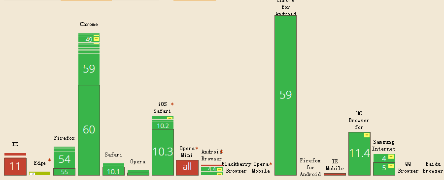

This morning, when I was searching the Github and found the "drop-shadow" attribute, my first reaction was "Is that wrong? Maybe it is box-shadow." Ok, the truth is I am stupid. I began to search the "drop-shadow" in the github, web and the help manual of CSS3. Finally, I found some good blogs about it, such as
ZhangXinxu's blog. Actually, I want to write a blog to introduce some interesting features about "drop-shadow" except those in ZhangXinxu's blog.
But first, let's look at the difference between "drop-shadow" and "box-shadow".
1. Compatibility
Another reason why I was not familiar with "drop-shadow" is for its compatibility. These years I have always cared about compatibility, so some attributes of poor compatibility are less concerned. Obviously it's not a good idea and I have to pay for my mistakes. Now, just learn something new!

From the chart we can see the bad compatibility in IE and IE mobile. But IE13+ has already supported this attribute. As for the future, who knows? Maybe it will be a amazing factor for its cherubic effect compared to "box-shadow".
2. Grammar
The "drop-shadow"'s parameters are similar to "box-shadow"'s.
filter:drop-shadow(offsetX, offsetY, ambiguity, color);
-webkit-filter:drop-shadow(offsetX, offsetY, ambiguity, color);
3. Difference
Let's use a small case to show the difference. Just imagine that we want to add a shadow to a heart picture, and the shadow also should be a heart. Let's go "box-shadow" first.
.container {
width:200px;
height:200px;
box-shadow: 20px 20px 20px red;
background: url(tfimg/littleheart.png) no-repeat center;
}
<div class="container"></div>
Ok, what's happening? The "box-shadow" can only add shadow to the whole picture, but it's not we want. And let's see the amazing effect of "drop-shadow".
.container {
width:200px;
height:200px;
background: url(tfimg/littleheart.png) no-repeat center;
filter:drop-shadow(20px 20px 20px red);
-webkit-filter:drop-shadow(20px 20px 20px red);
}
<div class="container"></div>
Isn't it amazing? The "drop-shadow" can, emmmmmmmmmmm, can through the ".png" picture where there is transparent and only project opaque areas. Ok, maybe this is the foundation function of "drop-shadow", and if you want to learn more details, just look at the ZhangXinxu's blog.
4. Amazing effect
Is that all? No! When I was coding some cases of "drop-shadow", I found an interesting thing accidentally. What will happen if we put "box-shadow" and "drop-shadow" together?
.container{
width:200px;
height:200px;
background: url(tfimg/littleheart.png) no-repeat center;
filter:drop-shadow(20px 20px red);
-webkit-filter:drop-shadow(20px 20px red);
box-shadow: 20px 20px black;
}
<div class="container"></div>
The "drop-shadow" will add a shadow to the layer of "box-shadow". We realize the "box-shadow" can create a "div". So does "drop-shadow" also create a "div"? Let's see another case, in this case, I will change the DOM tree in order to show the difference.
.container{
width:200px;
height:200px;
}
.container>img{
filter:drop-shadow(50px 50px red);
box-shadow: 20px 20px 20px black;
}
<div class="container">
<img src="tfimg/littleheart.png" alt="">
</div>
How to explain this effect? Actually, the "drop-shadow" will project all the opacity areas including the shadow areas, border areas and so on. And it will create a...emmmmmmm I name it "half-div". What is "half-div"? Actually it is a real "div", but some areas don't obey the hierarchical order, it only care about transparent —— "If there is transparent and I will show!"
So if we add "drop-shadow" attribute in the parent "div", the effect will be the same, because the default parent is transparent, and the only opacity area is the heart picture.
.container{
width:200px;
height:200px;
filter:drop-shadow(50px 50px red);
}
.container>img{}
<div class="container">
<img src="tfimg/littleheart.png" alt="">
</div>
Ok, I think these cases will help you understand it. But the best way to learn something is to use your hands and try it! Finally let's say it again! "If there is transparent and I will show!"
(That's all)